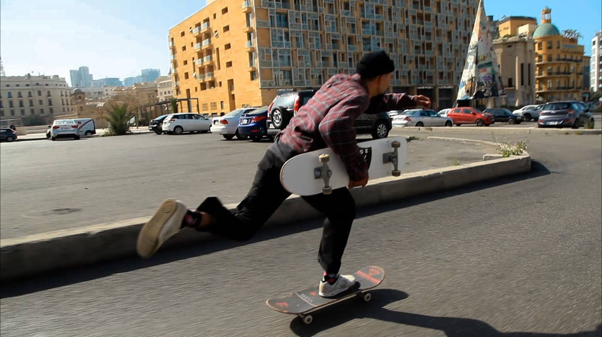
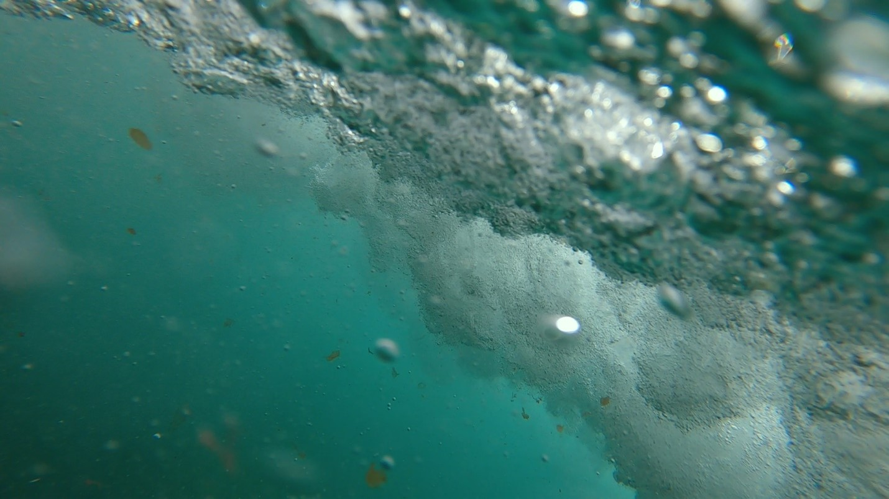

"The Marble"
2021 / 10' / Lebanon / Short documentary / Arabic with English subtitles
A film by Anita Al Mourany
Writer: Anita Al Mourany
Producer Anita Al Mourany
With: Dany Sultan, Ahmad Bersheilly

Synopsis
'The Marble” is a short documentary that highlights the reality of an
underrated and neglected sport in Lebanon, skateboarding, yet a coping
mechanism and an escape for the young talented skaters from the harsh
reality that they live in. It showcases the obstacles that they face
with the government and the problems that they face while looking for
skating spots.
"Zahi"
2021 / 9' / Lebanon / Short drama / Arabic with English subtitles
A film by Anita Al Mourany
Writer: Anita Al Mourany
Producer: Grace Barakeh
With: Ibrahim Abdallah, Maria Doueihy

Synopsis
A short drama about an 11-year-old boy, Zahi, who one day returns home
from his work to find out that his mom, Souha, who’s diagnosed with
Alzheimer, is not home. Zahi goes on a journey to look after his mom in
the old streets of Tripoli.
"Heaven on Earth"
2021 / 2' / Lebanon / Short experimental / Arabic with English subtitles
A film by Anita Al Mourany
Writer: Anita Al Mourany
Producer: Anita Al Mourany

Synopsis
A short experimental that reflects the director’s emotional state
towards her country’s current political and economic situation. This
film’s visuals contradict its audio and represent how Lebanon’s
politicians and government are drowning their people.